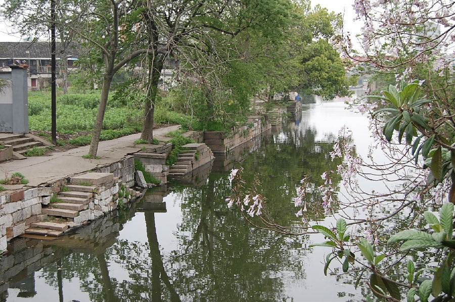

嘉兴市文物保护网 · 市级文物保护点 · 2022-05-16 · 原文

双魁巷石埠头群位于南湖区解放街道航明社区鉏家滩、双魁巷东侧，建于民国时期。石埠头共有9个，从北向南分布在一条长约110米的街道东侧，均为双向踏步台阶，台阶上刻有水波纹。该石埠头群反映了江南临水建屋的风格，对研究当地居民的日常起居具有一定的意义，目前同类建筑在嘉兴市区已极少见，因此具有较高的历史、科学和艺术价值。2021年被公布为嘉兴市文物保护点。